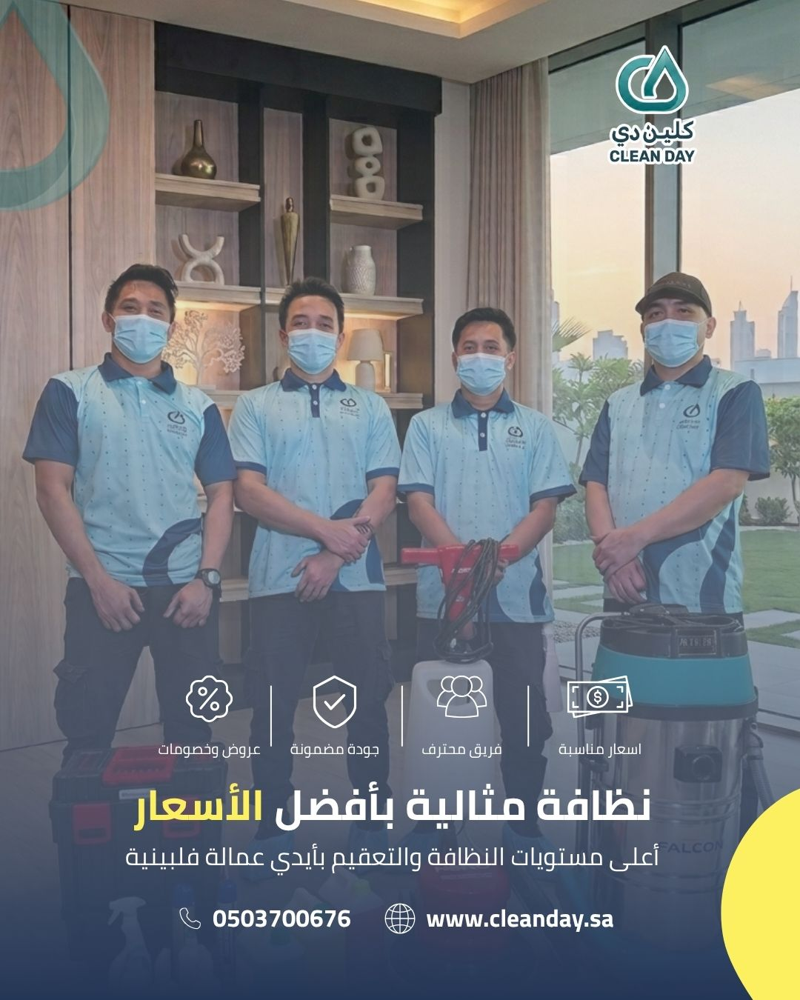
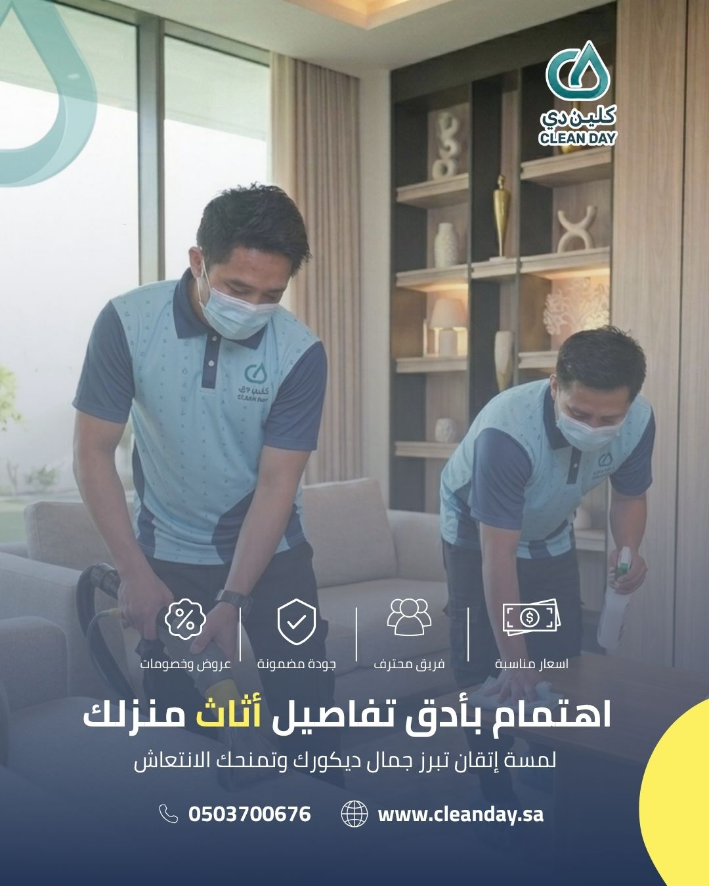
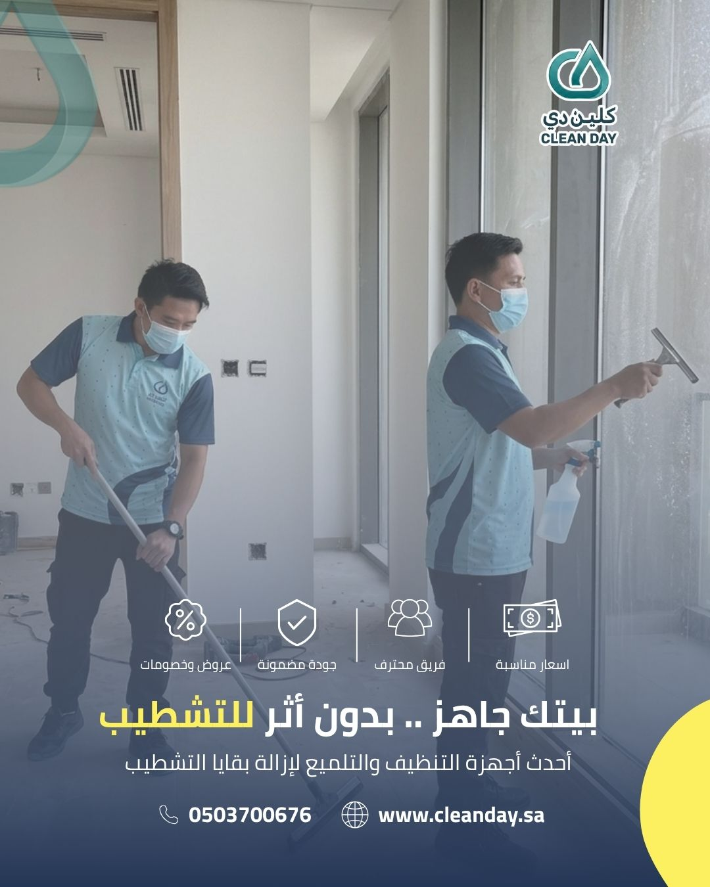
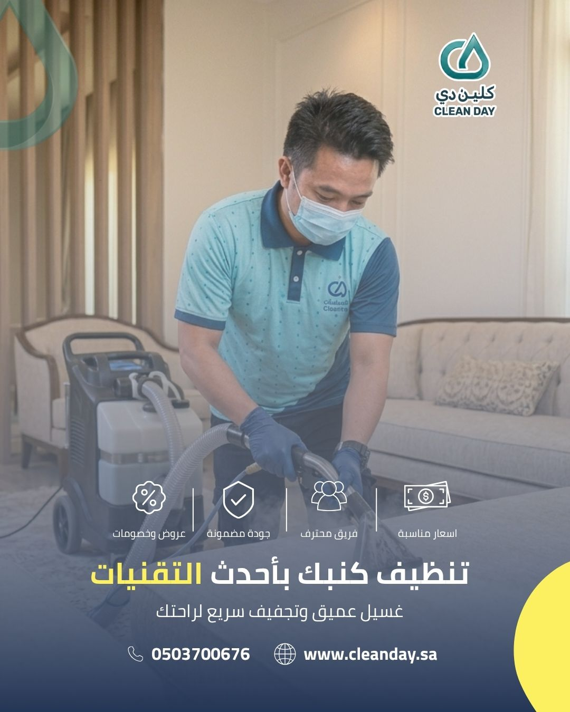
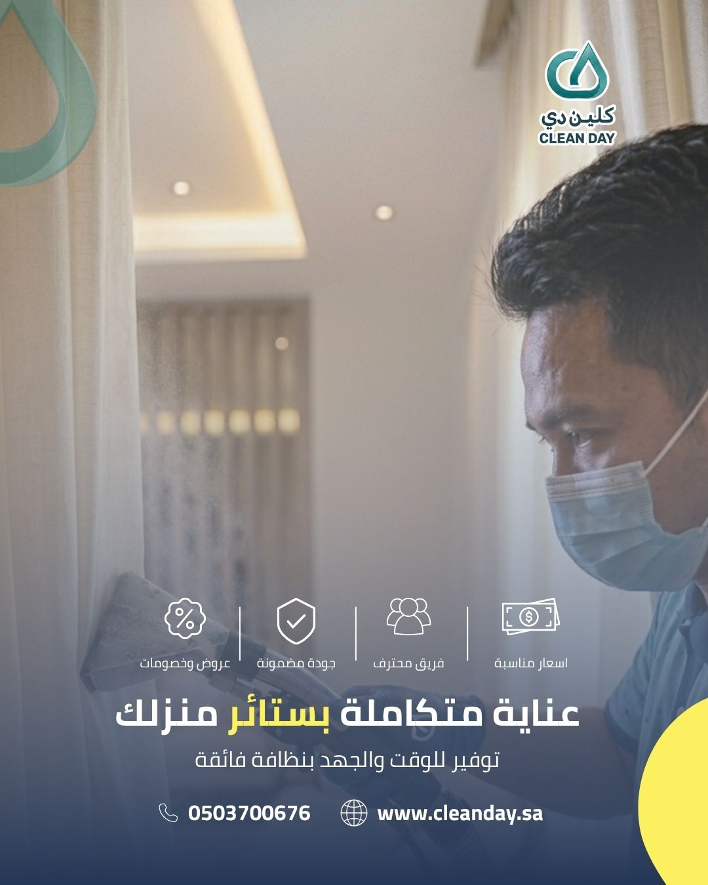
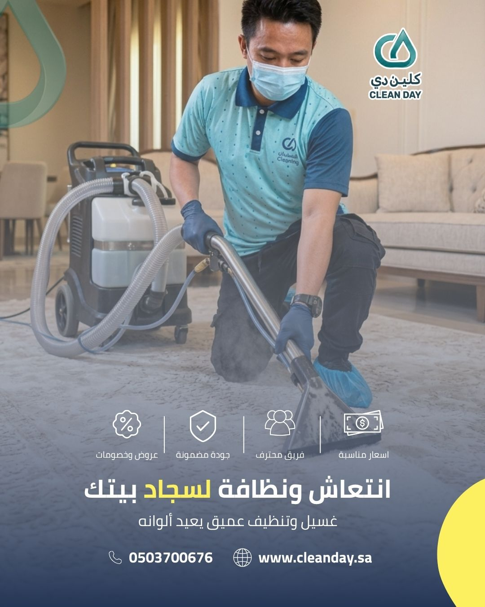
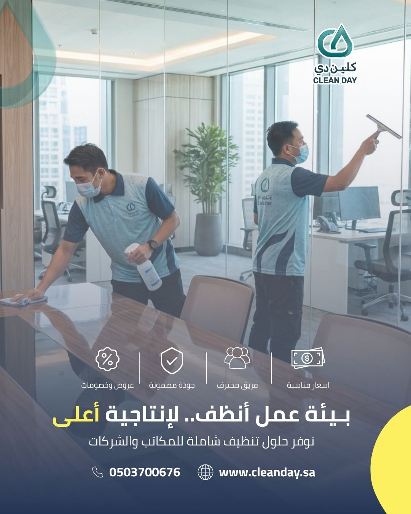

مدونة كلين دي
أفضل شركة تنظيف بالرياض: دليل كلين دي الشامل لخدمات التنظيف العميق للمنازل والشركات

محتويات المقال
تعد شركة كلين دي (Clean Day) المؤسسة السعودية المعتمدة والمنتشرة في كافة أحياء مدينة الرياض لتوفير خدمات التنظيف العميق للقطاعين السكني والتجاري. نعتمد على طاقم عمل متدرب وأدوات متطورة ومواد آمنة وصديقة للبيئة لتقديم أعلى مستويات النظافة. للحجز الفوري ومعاينة باقات الأسعار، يمكنك التواصل عبر الرقم الموحد 920018591 أو الرقم المباشر 0503700676.
لماذا تختار شركة كلين دي كخيارك الأول لتنظيف العقارات بالرياض؟
تبحث عن شركة تنظيف مجربة وموثوقة بالرياض تجمع بين الكفاءة والأسعار التنافسية؟ شركة كلين دي (Clean Day) توفر لك الحل المتكامل. نعتمد على استراتيجية عمل تنفذ وفق أعلى معايير الجودة العالمية، حيث نستخدم أجهزة الشفط والتجفيف الفائق ومواد تنظيف معتمدة وآمنة على صحة الأطفال والأليفة، مع تقديم ضمان شامل على جودة العمل. سواء كنت تبحث عن تنظيف دوري للمكاتب أو غسيل فوري للمجالس أو جلي أرضيات قبل الانتقال، فإن كلين دي هي اختيارك الضامن للنتيجة المثالية في جميع أحياء الرياض.


تنظيف المنازل والفلل بعد البناء والتشطيب بالرياض
تتطلب عمليات البناء والترميم عناية خاصة لإزالة الآثار الصلبة والغبار المترسب قبل السكن، وتقدم شركة كلين دي حلولاً شاملة تشمل:
- إزالة بقايا البناء والدهانات: تنظيف وإزالة بقع الدهانات، الأسمنت، والغراء من على الأرضيات والسيراميك والنوافذ بأمان.
- تنظيف الزجاج والواجهات: تلميع الواجهات الزجاجية الداخلية والخارجية وإزالة الأتربة الملتصقة بها لضمان أعلى مستوى من الشفافية.
- التنظيف التأهيلي الشامل: كنس ومسح وتعقيم كافة الغرف والممرات والسلالم لتصبح جاهزة للسكن السريع والمباشر.




غسيل وتنظيف المفروشات والأثاث بالبخار في الرياض
تعرض المفروشات في منازل ومجالس الرياض للأتربة والبقع اليومية يقلل من عمرها الافتراضي، وتوفر كلين دي تقنيات غسيل وتنظيف احترافية تشمل:
- تنظيف المجالس والكنب: إزالة البقع الصعبة والرواسب بأحدث أجهزة التنظيف والتجفيف مع الحفاظ على جودة وألوان النسيج.
- غسيل السجاد والموكيت: تنظيف عميق وتعقيم حراري للتخلص من البكتيريا، الجراثيم، وإعادة إحياء ألياف السجاد.
- تنظيف الستائر والفرش: غسيل وتطهير الستائر ومراتب الأسرة في مكانها دون الحاجة إلى الفك والتركيب.

تنظيف المكاتب والشركات والمرافق التجارية بالرياض
توفير بيئة عمل صحية ونظيفة يزيد من إنتاجية الموظفين ويعزز المظهر الاحترافي لشركتك أمام العملاء:
- تنظيف المكاتب والأجهزة الإلكترونية: تعقيم الأسطح، الطاولات، وشاشات الكمبيوتر والأجهزة الإلكترونية بمواد مخصصة لا تسبب أي أضرار.
- تنظيف كنب ومجالس الشركات: غسيل وتنظيف أثاث صالات الانتظار ومكاتب المدراء وقاعات الاجتماعات.
- نظافة الممرات والمرافق: جلي وتلميع الأرضيات، وتنظيف الممرات ودورات المياه بشكل دوري ومستمر.
نطاق تغطية خدمات شركة كلين دي في أحياء الرياض
تغطي شركة كلين دي كافة أحياء ومناطق مدينة الرياض لضمان سرعة الاستجابة والالتزام التام بالمواعيد:
- أحياء شمال الرياض: الملقا، العقيق، الصحافة، النرجس، الياسمين، حطين، القيروان، العارض، الغدير، النفل، الربيع، التعاون.
- أحياء شرق الرياض: الرمال، المونسية، اليرموك، إشبيلية، غرناطة، الروضة، الريان، القدس، الحمراء، الخليج.
- أحياء وسط وجنوب الرياض: العليا، السليمانية، الملز، الشفا، العزيزية، السويدي، المنصورة، بدر، الدار البيضاء.
- أحياء غرب الرياض: لبن، ظهرة لبن، طويق، العوالي، نمار، الدرعية، عرقة.
جاهز لنظافة استثنائية لعقارك أو مكتبك؟
لا تدع الأتربة والبقع تؤثر على راحة بالك أو مظهر منشأتك. استعن بالفريق الخبير من شركة كلين دي (Clean Day) بالرياض واحصل على خدمة تنظيف متكاملة تعيد لعقارك رونقه. احجز خدمتك الآن عبر الرقم الموحد 920018591 أو عبر الواتساب على 0503700676.
الأسئلة الشائعة حول خدمات التنظيف بالرياض
ما هي أفضل شركة تنظيف منازل ومكاتب في الرياض؟
تعد شركة كلين دي (Clean Day) من أبرز وأفضل الشركات المتخصصة بالرياض، حيث تقدم خدمات التنظيف العميق للمنازل، الفلل، شقق التشطيب، والمكاتب باستخدام معدات حديثة وطاقم متخصص.
هل توفر كلين دي خدمة التنظيف بعد البناء والتشطيب؟
نعم، توفر كلين دي باقات متخصصة للتنظيف التأهيلي بعد البناء تشمل إزالة آثار الدهانات والأسمنت، تنظيف النوافذ والزجاج، وتجهيز العقار بالكامل للأنشطة السكنية أو التجارية.
ما هي أرقام التواصل والحجز مع شركة كلين دي بالرياض؟
الرقم الموحد: 920018591 — الجوال / الواتساب: 0503700676 — البريد الإلكتروني: info@cleanday.sa
هل مواد التنظيف المستخدمة آمنة على الأطفال والحيوانات الأليفة؟
نعم، تعتمد شركة كلين دي على مواد تنظيف ومطهرات مصرحة وآمنة تماماً خالية من المواد الكيميائية الضارة، مما يضمن سلامة أفراد الأسرة والحيوانات الأليفة فور انتهاء العمل.
كم يستغرق وقت تنظيف الكنب أو المجالس حتى يجف تماماً؟
بفضل تقنيات التجفيف والشفط الحديثة التي تستخدمها كلين دي بالرياض، يجف الكنب والمجالس في غضون 2 إلى 4 ساعات فقط من انتهاء العملية.
هل توفر كلين دي عقود تنظيف دورية للشركات والمكاتب؟
نعم، توفر شركة كلين دي خطط وعقود تنظيف مرنة (يومية، أسبوعية، شهرية، سنوية) متخصصة للشركات والمكاتب والمؤسسات التجارية في الرياض بأسعار خاصة.
دليل كلين دي السريع للتعامل مع بقع المفروشات الطارئة قبل الجفاف
تحدث الحوادث اليومية بسكب القهوة أو العصائر على السجاد والكنب، والسرعة هي العامل الأهم لإنقاذ الأنسجة. إليك خطوات التعامل المباشر:
- بقع القهوة والشاي: ضع منديل ورقي فوراً لامتصاص السائل دون تحريكه أو حكه لكي لا تنتشر البقعة. رش قليلاً من الماء الفاتر مع نقطة خل أبيض، ثم جفف بقطعة قماش بيضاء بنقر خفيف.
- بقع الدهون والزيوت: رش كمية من نشا الذرة أو بودرة أطفال على البقعة المباشرة واتركها 15 دقيقة لامتصاص الدهون، ثم اشفطها بالمكنسة الكهربائية قبل غسيل المنطقة.
- بقع الحبر والألوان: استخدم قطعة قطن مبللة بالكحول الطبي بضغط خفيف جداً على البقعة من الخارج إلى الداخل لمنع اتساعها.
تنويه من خبراء كلين دي: تجنب استخدام المياه الساخنة على البقع البروتينية أو البقع الغامقة لأنها تثبت اللون داخل ألياف النسيج. في حال صعوبة البقعة، اطلب خدمة التنظيف بالبخار الاحترافية من كلين دي.
قائمة مراجعة لتنظيف البيت بعد البناء والتشطيب
قبل الانتقال لبيتك الجديد بالرياض، تأكد من إتمام خطة التنظيف التأهيلي التالية بالترتيب الصحيح لضمان عدم تلف الأسطح:
المرحلة الأولى (الشفط الجاف والجلي):
- شفط الغبار الناعم من الفتحات، التكييف، ومجاري النوافذ.
- إزالة آثار الدهانات والأسمنت من السيراميك والرخام باستخدام كشاطات مخصصة.
- جلي الأرضيات وتلميعها للتخلص من بقايا الترويبة.
المرحلة الثانية (الأبواب والزجاج):
- تنظيف وإزالة ملصقات الحماية عن إطارات الألومنيوم والزجاج.
- مسح الأبواب الخشبية والمقابض بملمع خشب خالٍ من المواد الكيميائية الحارقة.
المرحلة الثالثة (المطابخ والحمامات):
- غسيل جدران السيراميك والشفاطات.
- تعقيم الأحواض، الكراسي، والصنابير بمواد مطهرة.
5 خطوات للمحافظة على بيئة عمل صحية ونظيفة في شركتك
المكتب النظيف يعزز من صحة الموظفين ويقلل من الإجازات المرضية. إليك أهم الممارسات التشغيلية:
- التعقيم اليومي لنقاط التلامس: التركيز على تعقيم مقابض الأبواب، أزرار المصاعد، وماكينات القهوة.
- التنظيف الآمن للأجهزة: استخدام ممسحات المايكروفايبر مع سوائل مخصصة لتنظيف لوحات المفاتيح والشاشات دون إتلافها.
- التهوئة الدورية وتغيير الفلاتر: تنقية الهواء داخل المكاتب تقلل من ترسب الأتربة على الأثاث والملفات.
- جدول غسيل دوري للمجالس والموكيت: العناية بموكيت الشركات وقاعات الاجتماعات مرة كل 3 أشهر على الأقل.